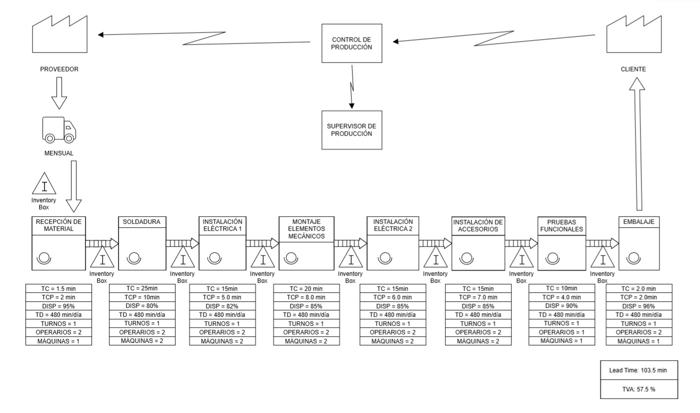
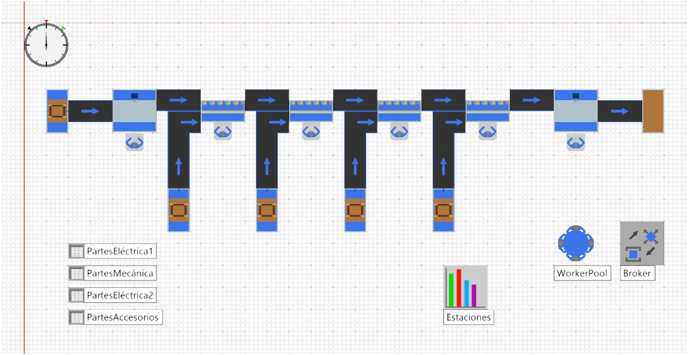
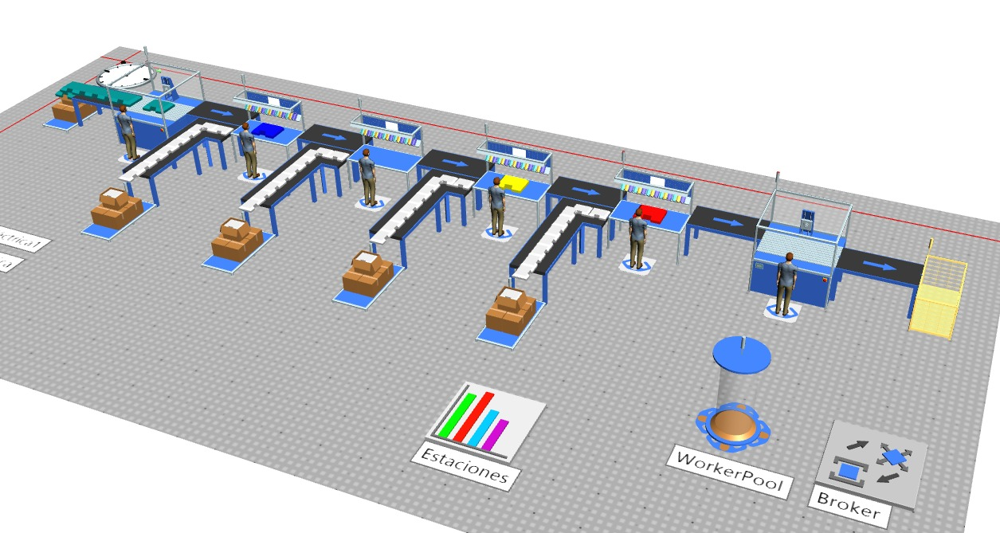
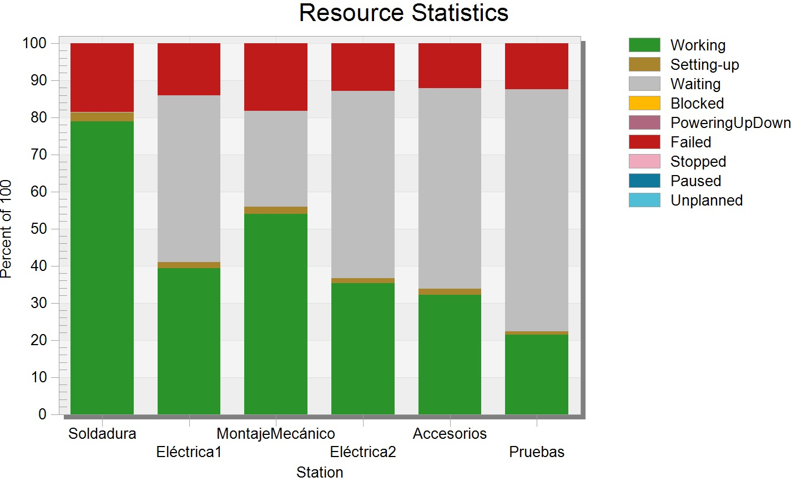
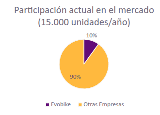
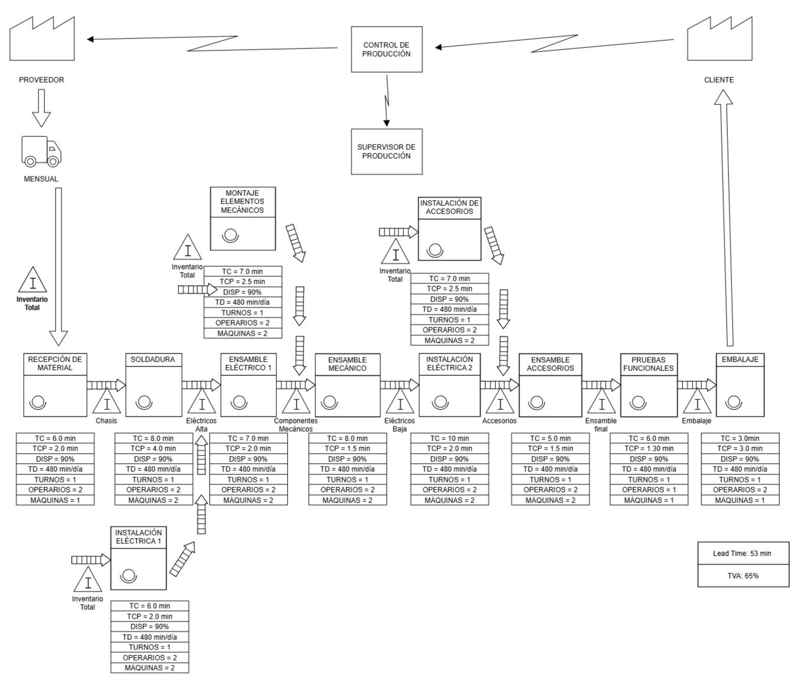
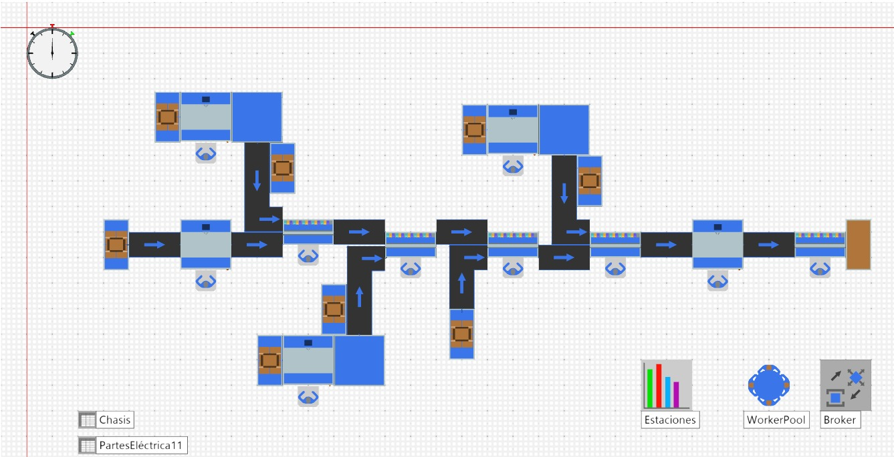
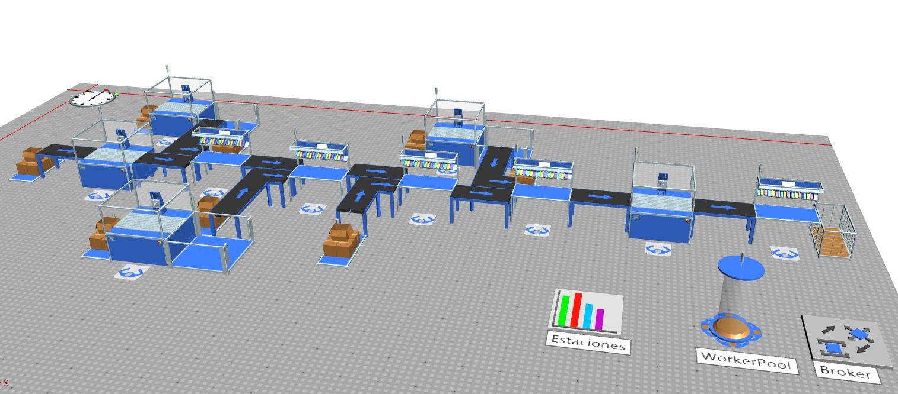

El análisis de la línea de producción consiste en la realición del VSM como se muestra en la figura de abajo. Esto se hizo para establecer las estaciones iniciales y el comportamiento del flujo del producto con tal de encontrar la etapa donde la automatización y robotización fuera más conveniente. En este mapeo, Cada etapa está claramente definida y cuenta con indicadores clave como el tiempo de ciclo (TC), tiempo de cambio de producto (TCP), disponibilidad (DISP), tiempo disponible (TD), número de turnos, operarios y máquinas.




| Proceso | DISP (%) | OEE = DISP x 0.80 x 0.85 (%) |
|---|---|---|
| Recepción de material | 95% | 64.60% |
| Soldadura | 80% | 54.40% |
| Instalación Eléctrica 1 | 82% | 55.80% |
| Montaje elementos mecánicos | 85% | 57.80% |
| Instalación Eléctrica 2 | 85% | 57.80% |
| Instalación de accesorios | 85% | 57.80% |
| Pruebas funcionales | 90% | 61.20% |
| Embalaje | 90% | 61.20% |
Para el mercado actual de bicicletas eléctricas se tiene una producción aproximada anual del 15.000 unidades con un incremento del 10% anual debido a las proyecciones y al crecimiento en el mercado de estos productos.

La propuesta de automatización plantea una reestructuración de la línea que incluye estaciones en paralelo, lo cual permite reducir significativamente los tiempos de producción al evitar cuellos de botella y mejorar el flujo del proceso. Esta organización mejora la eficiencia operativa y reduce errores gracias a la estandarización de tareas. En particular, se incorporó una celda robotizada de soldadura, seleccionada estratégicamente debido a que la estación de soldadura manual representaba una de las principales restricciones del sistema actual, incrementando los tiempos de espera aguas abajo y afectando negativamente la productividad global de la línea.



| Proceso | DISP (%) | OEE (%) |
|---|---|---|
| Recepción de material | 90% | 72.90% |
| Soldadura | 90% | 72.90% |
| Ensamble eléctrico 1 | 90% | 72.90% |
| Ensamble mecánico | 90% | 72.90% |
| Instalación eléctrica 1 | 90% | 72.90% |
| Instalación eléctrica 2 | 90% | 72.90% |
| Montaje elementos mecánicos | 90% | 72.90% |
| Instalación accesorios | 90% | 72.90% |
| Ensamble accesorios | 90% | 72.90% |
| Pruebas funcionales | 90% | 72.90% |
| Embalaje | 90% | 72.90% |
La propuesta de mejora reorganiza el proceso de forma modular, permitiendo una ejecución más eficiente mediante subensambles paralelos y reducción de desperdicios. Se redistribuyen las operaciones en estaciones especializadas por tipo de componente (eléctrico alto, eléctrico bajo, mecánico, accesorios), lo que optimiza el flujo de trabajo.
A continuación, se presenta una tabla comparativa entre ambos estados:
| Indicador | Estado Actual | Propuesta de Mejora | Mejora |
|---|---|---|---|
| Lead Time | 103.5 min | 53 min | Reducción de 48.8 % |
| Tiempo con Valor Agregado (TVA) | 57.5 % | 65 % | Aumento de 7.5 puntos |
| Número de puntos de inventario | 8 aprox. | 5 aprox. | Reducción de inventarios |
| Balance de carga | Bajo | Mejorado | Mayor eficiencia |
| Organización del proceso | Lineal | Modular/Paralela | Mayor flexibilidad |
| No. | Estación | Tipo de estación | Elementos / Equipos | Mano de obra |
|---|---|---|---|---|
| 1 | Recepción de Material | Manual + escaneo automatizado |
|
1 operario logístico |
| 2 | Estación de Soldadura (Celda Robotizada) (Se puede usar lo mismo del taller) | Automatizada (robot industrial) |
|
1 técnico de mantenimiento/programación |
| 3 | Instalación Eléctrica 1 | Semiautomatizada |
|
2 técnicos eléctricos |
| 4 | Montaje de Elementos Mecánicos | Manual asistida |
|
2 operarios mecánicos |
| 5 | Instalación Eléctrica 2 | Manual |
|
1 técnico eléctrico |
| 6 | Instalación de Accesorios | Manual |
|
1 operario de acabados |
| 7 | Pruebas Funcionales | Automatizada + operario |
|
1 técnico de pruebas |
| 8 | Embalaje | Manual con asistencia |
|
1 operario logístico |
Con base a esto, se presenta una selección de equipos clave para cada estación, con fabricantes y enlaces para cotización o compra:
Para montaje, cableado y embalaje se recomienda adquirir herramientas industriales manuales o semiautomáticas (atornilladores con control de torque, escáneres CAN, dispensadores de film), fácilmente disponibles localmente en proveedores de herramientas industriales o ferreterías especializadas.
| Elemento clave | Fabricante Ejemplo | Modo de compra |
|---|---|---|
| Robot + celda MIG (Puede ser lo mismo del taller) | ABB (nuevo o usado) | Distribuidor |
| Fuente Fronius TPS-500i | Fronius via Sager S.A. (Bogotá) | Sitio + distribuidor |
| SCADA + PLC | ABB Ability 800xA | Integradores locales |
| Banco de pruebas e-bike | Easyrun / EMEC / Weinmann | Sitio del fabricante |
| Herramientas manuales inteligentes | Varios | Mercado local |